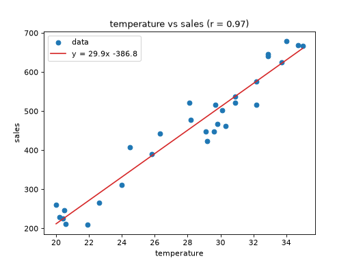

2 変数の相関と回帰直線
「気温が高い日ほど売上が多い」のように、2 つの変数の関係を数値で確認したい場面は実務でよくあります。ここでは、気温とアイスクリームの売上を例に、相関係数で関係の強さを調べ、回帰直線で関係を式として表し、散布図に重ねて可視化します。
データの準備
ここでは乱数で模擬的なデータを作成します。売上は「気温 × 30 − 400」に乱数のばらつきを加えた値とします。
import numpy as np
import pandas as pd
rng: np.random.Generator = np.random.default_rng(seed=0)
temps: np.ndarray = rng.uniform(20.0, 35.0, size=30).round(1)
sales: np.ndarray = (30 * temps - 400 + rng.normal(loc=0, scale=40, size=30)).round()
df: pd.DataFrame = pd.DataFrame({"temperature": temps, "sales": sales})
print(df.head())
# temperature sales
# 0 29.6 448.0
# 1 24.0 312.0
# 2 20.6 212.0
# 3 20.2 228.0
# 4 32.2 575.0
相関係数
相関係数（ピアソンの積率相関係数）は、2 つの変数の間にある直線的な関係の強さを -1 から 1 までの値で表す統計量です。データの組を \((x_i, y_i)\)、それぞれの平均を \(\bar{x}\)、\(\bar{y}\) とすると、次の式で計算されます。
一方が増えるともう一方も増える関係では正の値に、一方が増えるともう一方が減る関係では負の値になります。値の大きさを解釈する際の目安は次のとおりです。ただし、どの程度の値を「強い」とみなすかは分野やデータによって異なります。
相関係数の絶対値 |
解釈の目安 |
|---|---|
0.7 以上 |
強い相関がある |
0.4 以上 0.7 未満 |
中程度の相関がある |
0.2 以上 0.4 未満 |
弱い相関がある |
0.2 未満 |
ほとんど相関がない |
numpy では np.corrcoef で相関係数を計算できます。戻り値は、変数同士のすべての組み合わせについて相関係数を並べた行列（相関行列）です。
r: np.ndarray = np.corrcoef(df["temperature"], df["sales"])
print(r)
# [[1. 0.96723702]
# [0.96723702 1. ]]
r[0, 1]
# 0.9672370207773571 気温と売上の相関係数
対角成分は変数自身との相関なので常に 1 になります。気温と売上の相関係数は、行列の [0, 1]（または [1, 0]）の要素です。
pandas では、DataFrame の corr メソッドで数値列同士の相関行列を、Series の corr メソッドで 2 つの列の相関係数を計算できます。
df.corr()
# temperature sales
# temperature 1.000000 0.967237
# sales 0.967237 1.000000
df["temperature"].corr(df["sales"])
# 0.9672370207773571
相関係数は約 0.97 なので、気温と売上の間には強い正の相関があるといえます。
回帰直線
相関係数は関係の強さを表しますが、「気温が 1 度上がると売上がどれだけ増えるか」は分かりません。このような関係を式で表すには、データに最もよく当てはまる直線（回帰直線）を求めます。
ここで \(a\) は傾き、\(b\) は切片です。回帰直線は、各データ点の実際の値 \(y_i\) と直線による予測値 \(a x_i + b\) の差の 2 乗の合計が最小になるように決めます。この方法を最小二乗法と呼びます。
numpy では np.polyfit で回帰直線を求められます。第 3 引数には多項式の次数を指定し、直線の場合は 1 を指定します。戻り値は、次数の高い項から順に並んだ係数（傾き、切片の順）です。
slope: np.float64
intercept: np.float64
slope, intercept = np.polyfit(df["temperature"], df["sales"], 1)
print(f"傾き: {slope:.1f}, 切片: {intercept:.1f}")
# 傾き: 29.9, 切片: -386.8
傾きが約 29.9 なので、気温が 1 度上がると売上がおよそ 30 増えるという関係が読み取れます。データを作るときに使った「気温 × 30 − 400」に近い値が得られていることも確認できます。求めた傾きと切片を使えば、任意の気温に対する売上を予測できます。
slope * 30 + intercept
# 510.98386670335805 気温 30 度のときの売上の予測値（約 511）
注釈
回帰直線がデータにどの程度当てはまっているかは、決定係数 \(R^2\) で評価します。決定係数は 0 から 1 までの値をとり、1 に近いほどよく当てはまっていることを表します。この例のように説明に使う変数が 1 つの回帰では、決定係数は相関係数の 2 乗に等しくなります（この例では約 0.94）。
注釈
numpy の公式ドキュメントでは、新しくコードを書く場合は np.polyfit よりも np.polynomial.Polynomial.fit を使うことが推奨されています。Polynomial.fit を使う場合は、np.polynomial.Polynomial.fit(x, y, 1).convert().coef で係数を取り出します。係数は np.polyfit とは逆に、次数の低い項から順（切片、傾きの順）に並ぶ点に注意してください。
グラフとして可視化する
散布図にデータを描き、求めた回帰直線を重ねて表示します。
import numpy as np
import pandas as pd
import matplotlib.pyplot as plt
from matplotlib.axes import Axes
from matplotlib.figure import Figure
rng: np.random.Generator = np.random.default_rng(seed=0)
temps: np.ndarray = rng.uniform(20.0, 35.0, size=30).round(1)
sales: np.ndarray = (30 * temps - 400 + rng.normal(loc=0, scale=40, size=30)).round()
df: pd.DataFrame = pd.DataFrame({"temperature": temps, "sales": sales})
r: np.float64 = df["temperature"].corr(df["sales"])
slope: np.float64
intercept: np.float64
slope, intercept = np.polyfit(df["temperature"], df["sales"], 1)
x_line: np.ndarray = np.linspace(20, 35, 100)
y_line: np.ndarray = slope * x_line + intercept
fig: Figure
ax: Axes
fig, ax = plt.subplots()
ax.scatter(df["temperature"], df["sales"], label="data")
ax.plot(
x_line, y_line, color="tab:red",
label=f"y = {slope:.1f}x {intercept:+.1f}",
)
ax.set_title(f"temperature vs sales (r = {r:.2f})")
ax.set_xlabel("temperature")
ax.set_ylabel("sales")
ax.legend()



回帰直線を描くために、np.linspace で気温の範囲を細かく区切った x 座標を作り、傾きと切片から y 座標を計算しています。
相関を読み取る際の注意
相関係数や回帰直線は手軽に計算できますが、結果を解釈する際には次の点に注意が必要です。
相関関係は因果関係を意味しない: 相関係数が高くても、一方が原因でもう一方が結果であるとは限りません。たとえば、気温と売上の両方に「季節」のような別の要因が影響している可能性もあります。
直線的でない関係は捉えられない: 相関係数が表すのは直線的な関係の強さだけです。たとえば \(y = x^2\) のような放物線の関係では、\(x\) が -3 から 3 まで対称に分布していると相関係数はほぼ 0 になります。
外れ値の影響を受けやすい: 少数の外れ値によって、相関係数や回帰直線の傾きが大きく変わることがあります。計算の前に散布図でデータを確認し、必要に応じて「センサーデータの統計処理と外れ値の除外」で紹介したような方法で外れ値を処理してください。
いずれの場合も、数値だけで判断せず、散布図を描いてデータの様子を目で確認する習慣をつけることが大切です。